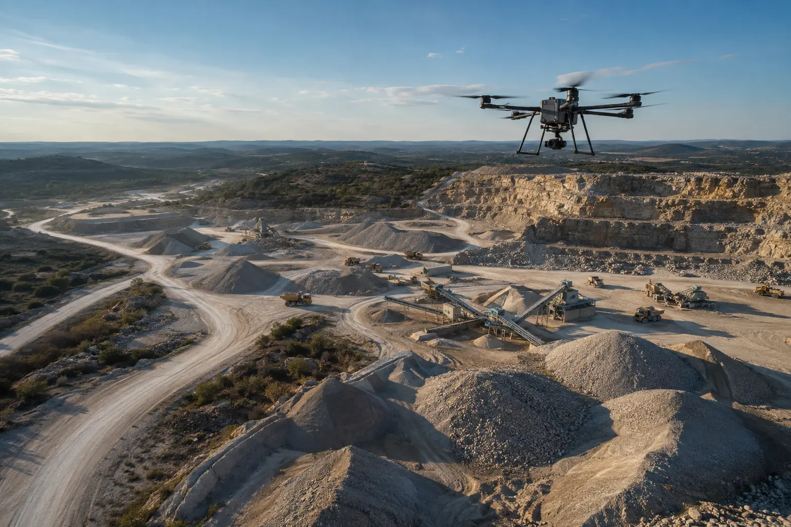

Aerial Photography & Video
Polished perspectives that establish setting, scale, access, outdoor improvements and nearby context.
- High-resolution and MLS-ready images
- Branded and unbranded video options
- Horizontal and vertical social edits
PROPERTY DOCUMENTATION • LISTING MEDIA • SAN ANTONIO + HILL COUNTRY
Premium aerial imagery, walkthroughs, 3D experiences and visual documentation for listings and properties where the full site—not only the front elevation—shapes the decision.

BUILT AROUND THE PROPERTY
Choose a focused listing-media package or build a documentation set around the property, the audience and the decision it needs to support.
Polished perspectives that establish setting, scale, access, outdoor improvements and nearby context.
Guide prospective buyers through the property with an edited visual story or a scheduled remote showing.
An always-available experience that lets buyers, owners and project teams move through the space remotely.
Communicate how structures, roads, terrain, water features and improvements relate across a large property.
INSPECTION-SUPPORT DOCUMENTATION
For owners, appraisers, contractors, adjusters and project teams, Wise can capture a consistent visual record of accessible property conditions. The deliverable is organized evidence—not a licensed home inspection or engineering opinion.
Scope a documentation visit →
Roof surfaces, elevations, drainage features, exterior improvements and hard-to-view areas.

Organized walkthrough imagery, scan data and location-based records for remote review.

Structures, access, utilities, site features and supplied property information in a clear visual package.
WHAT YOU RECEIVE
Each project is scoped to avoid unnecessary production while giving the agent, owner or project team assets they can immediately use.
High-resolution originals plus web and MLS-ready exports.
Branded, unbranded, horizontal or vertical edits as selected.
A shareable interactive experience for remote viewing.
Approximate marketing graphics for improvements, access and acreage context.
Organized folders, annotations or location references for visible-condition review.
Files organized for MLS, websites, email, presentations and social media.
STARTING PACKAGES
Final pricing depends on location, acreage, access, occupancy, deliverables and turnaround. Large properties are quoted by capture plan—not treated like a standard residential lot.
AERIAL ESSENTIALS
Clean aerial coverage for a standard residential property.
PROPERTY SHOWCASE
Still imagery plus motion for a stronger listing launch.
IMMERSIVE LISTING
A complete visual story for premium residential listings.
RANCH + ACREAGE
Coverage scaled to the land, improvements and intended buyer.
Standard packages assume a property within the quoted service area, safe legal flight conditions and normal access. Travel, twilight, rush delivery, extensive revisions, advanced 3D outputs and large-acreage coverage are quoted separately.
A SIMPLE PROPERTY WORKFLOW
Send the address, acreage, listing status and the features buyers or reviewers must understand.
We recommend the capture plan, deliverables, fixed scope and any access or weather requirements.
FAA-compliant aerial operations and coordinated ground, walkthrough or scan documentation.
Receive organized high-resolution, MLS, web, social or project-review files.
CLEAR SERVICE BOUNDARIES
Wise Geospatial provides aerial media, visual documentation, 3D capture and marketing-oriented property graphics. These services do not replace a licensed home inspection, engineering evaluation, appraisal, title review or professional land survey.
Boundary lines, dimensions, acreage labels and feature overlays are approximate visual aids based on supplied or public information unless prepared within the licensed professional structure required by Texas law. Thermal and visible imagery identifies areas for further review; it does not diagnose defects.
PLAN A PROPERTY
Include the listing timeline, approximate acreage and the features that deserve attention. We will return a practical capture plan and fixed scope.